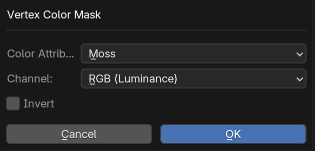
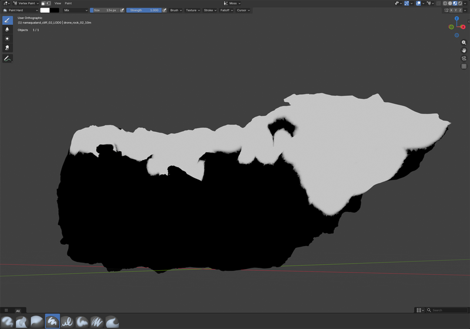

Masks & Generators
Masks let you control where and how a material or texture layer appears on a surface. Each mask in Simple PBR Layering is a self-contained node group that you connect to a mix, multiply, or blend node in your shader tree.
All mask operators are found in the Masks section of the Simple PBR Layering panel.
User Masks
Vertex Mask
Use painted vertex colors to as masks.
Pick an existing Color Attribute or create a new one, choose which Channel to use (RGB Luminance, R, G, B, or Alpha), and optionally Invert the result.
Typical use: hand-painted dirt or moss, masking without UVs, using R/G/B channels of one attribute as three independent masks. The mask is depending on the asset resolution and can only be used for rough masks on lower resolution assets. The result can be improved in combination with other masks. It is often used to limit the effect of other masks.


Texture Mask
Uses an image texture as a blend factor. Select a Blend Group first and the output is wired automatically; otherwise connect it manually.
Choose an existing image, load one from disk, or create a new blank texture (set a Name and Resolution up to 4096). Pick whether the Output is driven by Color (Luminance) via an RGB to BW node, or the texture's Alpha channel directly. Optionally Invert the result.
Typical use: painted masks baked in an external tool, hand-drawn stencils, any greyscale or alpha-channel mask image.
Triplanar Texture Mask
Projects an image texture from all three object-space axes and blends the results into a single Factor output — no UV unwrapping needed. Tile, Scale, Rotation, Blend Sharpness, and Aspect Ratio are all exposed directly on the node. Aspect Ratio is set automatically from the image dimensions.
Same image picker as Texture Mask (existing / load from disk / new blank). If the target's Factor input is already connected, choose whether to Replace it or keep the existing connection. Optionally Invert the output.
Typical use: tileable detail masks on assets without UVs, seamless grunge or wear patterns on complex geometry.
Procedural Shader Masks
Basic masks without dependencies
Position Mask

Creates a gradient mask based on the object-space position along a chosen axis (X, Y, or Z).
Typical use: - Dirt Mask - Gradients along the objects - Isolating Height areas
Normal Mask

Masks surfaces based on how closely their normal aligns with a chosen direction. Faces pointing toward that direction become white (Factor = 1), faces pointing away become black (Factor = 0).
| Input | Description |
|---|---|
| Direction | The reference vector to compare normals against. Default (0, 0, 1) = world up. |
| Coordinates | World — direction is fixed in the scene. Object — direction rotates with the mesh. |
| Angle | Coverage in degrees. 90° masks surfaces within a right angle of Direction; higher values cover more of the mesh. |
| Softness | Width of the transition zone. 0 = hard edge, 1 = gradual falloff. |
| Invert | Flip the output — e.g. mask downward-facing surfaces instead. |
Typical use: Snow or dust on upward-facing surfaces, wet patches on top geometry, directional weathering.
Ambient Occlusion Mask

Generates an ambient occlusion effect using Blender's built-in AO shader node, producing a soft darkening in corners and crevices.
Typical use: Dirt, dust, or grime accumulation in sheltered areas. Multiply it over a Base Color to add visual depth.
Curvature Mask - Cycles Only

Derives a mask from the surface curvature — bright on convex edges, dark in concave cavities (or inverted, depending on your settings).
Typical use: Edge wear, paint chipping, or scratches that appear on raised geometry.
Convexity Mask - Cycles Only

Cavity Mask - Cycles Only

Projection Masks
Triplanar Texture Mask
Projects a texture from three orthogonal planes and blends the results at the seams, so the mask is seamless regardless of UV layout.
Typical use: Applying a tileable detail texture or stencil to objects that have no UVs, or that have complex/overlapping UVs.
Box Projector Mask
A box-projection mask that evaluates which faces of a mesh are visible from each of the six sides of a bounding box, then blends the results. Useful for applying decal-style detail on objects without UV unwrapping.
Typical use: Grunge overlays, decal placement on complex assets, or sticker-like details added non-destructively.
Geometry Node Masks
Masks that require data from a Geometry Node setup. The Goemetry Node setup is created by the addon
Proximity Mask
Generates a mask based on the distance from the surface to a target object or collection. Objects that are close to the target receive a different value than those that are far away.
Typical use: Wet sand around a water edge, moss growth near a wall base, or contextual blending between two surfaces that interact.
Combining Masks
Masks can be chained together using standard Blender Math or MixRGB nodes. A common pattern is:
- Use a Position Mask to restrict a surface effect to the bottom half of an object.
- Multiply it by a Curvature Mask to further limit it to concave areas.
- Feed the result into a Blend group to mix a dirty/wet material over the base material.